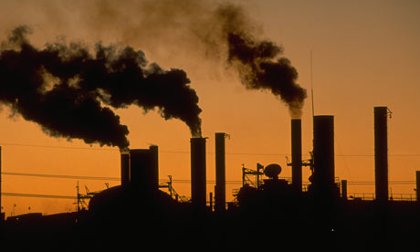
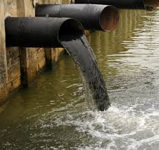
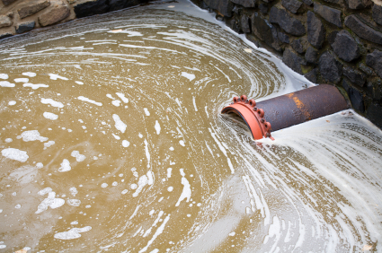
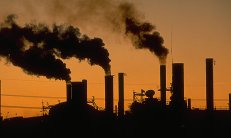
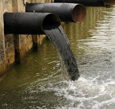
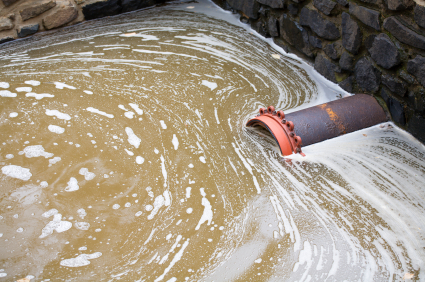

<!DOCTYPE html>
Industrial Pollution in Developing countries html, body { height:100%; margin:0; padding:0; } header { height: 3em; background-color:green; position:relative; z-index:1; } .content { background-image: url("river.jpg"); position:absolute; top:-3em; bottom:0em; overflow:auto; } .contentinner {</p> <p>} .container { height: 100%; margin: 2em 0 -1em 0; background:black; position:relative; overflow:auto; } footer { height: 240px; position:relative; z-index:1; } ul#menu li { margin: 0 20px; display:inline; }Worldwide Industrial pollution:
      Even though there are laws and filtering precautions in place, companies do avoid these laws for self-benefit. Due to factory procedures, industries release toxic pollutants from their factories into nearby water sources. By implicating stricter laws and more efficient and cost effective filters, I believe that we can change companies from shutting down their filter systems or by using low quality through safer and effective and cheap filets, which in turn will protect many water ways in the world from harmful water pollutants.
      Specific industries that cause the most harm to nearby water ways are those who incorporate hazardous chemicals into the procedures for separating the material from the product, i.e. companies that produce metals and need the use of water to separate certain materials from other and after dumping it back into water ways. According to statistics to back up my evidence, it is shown (in developing countries) that roughly 70% of industrial waste is dumped into the nearby bodies of water where they pollute usable water. To add insult to injury 90% of the wastewater from developing countries are allowed to flow untreated to other bodies of water. More to this is that 80% of the Worlds wastewaters are left untreated (300-500 million tons of toxic industrial waste a year), which in turn makes this incident a worldwide epidemic.
      There is however a major flaw in the system of all factories from the industries, even though there are many, the most important one is the use of outdated and cheap technologies. Due to these cheap processes (at the expense of the environment) nearly 300-500 million tons of toxic industrial waste is dumped a year (and that's only in 2004). If these trends continue on along with the industrial waste trend, an increase from 752 km^3/year of water just on industries in 1995 will most likely increase to 1,170 km^3/year in 2025. If the use of water increases in the industrial industry, that means that there will be more industrial waste dumped too, as industrial process that separate the product from the byproduct increases along with the increase of water usage. Some of the processes that release the most chemicals are melting & pouring which releases Si, Fl, Ni, Cd, Pb, Cr, Mn, Be, Al, and Zn in metal preparation, fabrication, and finishing, another harmful process is electroplating which uses water in order to break a bond in a molecule, in other words it is the epitome of water pollution, chemical's released are NO2, AsH3, CN, H2S, HF, HCI, and H2S04.
      Policies are important when it comes to setting up factories, corporations will generally set up shop wherever there are laws and policies that increase their profit. After all the definition of capitalism is economic and political system for a private owners own profit and since private owners own industries it's obvious they'll exploit the laws and policies of 2nd and 3rd world countries their own gain. To regulate these pollution fact (however with the consent of 2nd and 3rd world countries) I believe that stricter p2 laws are needed in those places. Also due to 3rd and 2nd world countries being lenient on regulations many companies move their factories there rather than staying where HQ is, this in effect increases their profit (due to lesser wagers, regulations, and laws in those areas) at the while destroying Earth's environment.
      Through loopholes and 3rd and 2nd world countries, corporations set up their factories and exploit the use of laws and regulation for profit. These companies, overusing water for ancient and cheap processes like Electroplating and Abrasive blasting to not setting up precautions like filters and instead dumping the waste raw. If only there were stricter regulations were in place or the use of better filters. The industrial water pollution statistics along with global pollution statistics add up to nearly 2 million tons of sewage, industrial and agricultural waste. All this adding up to an unhealthy global water quality, if it were to keep up, I'm afraid the water quality worldwide will decrease exponentially.

 




